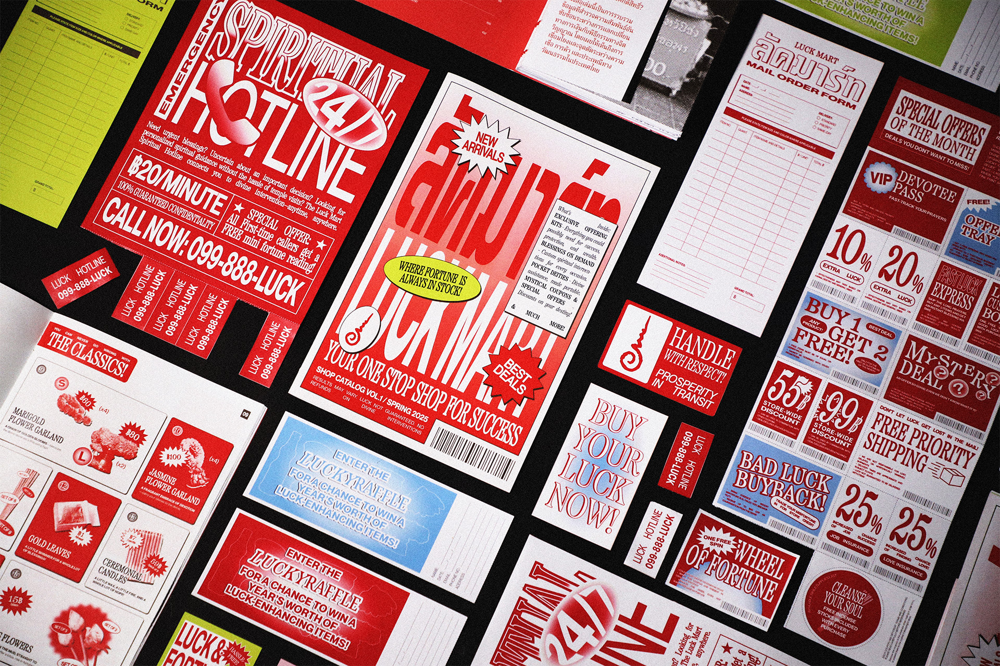
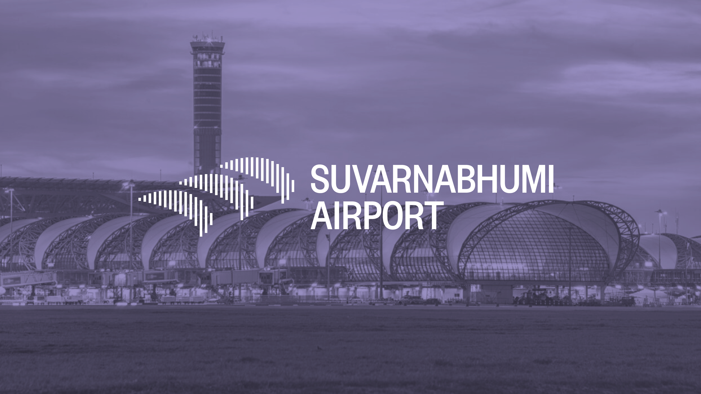
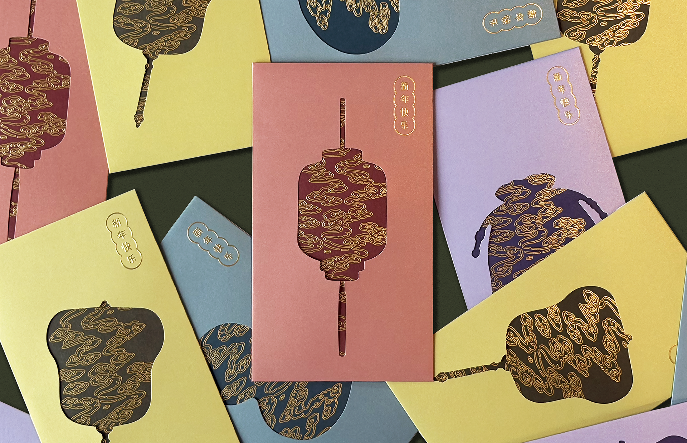
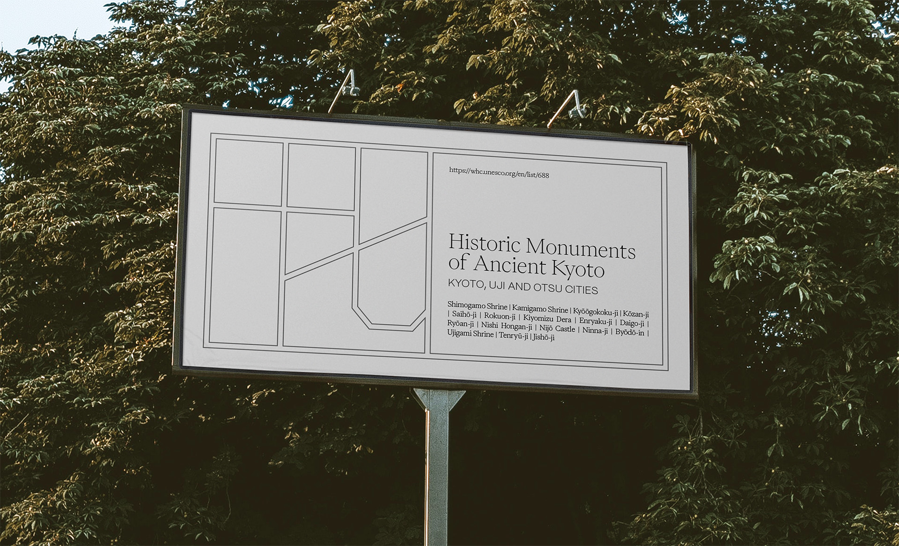
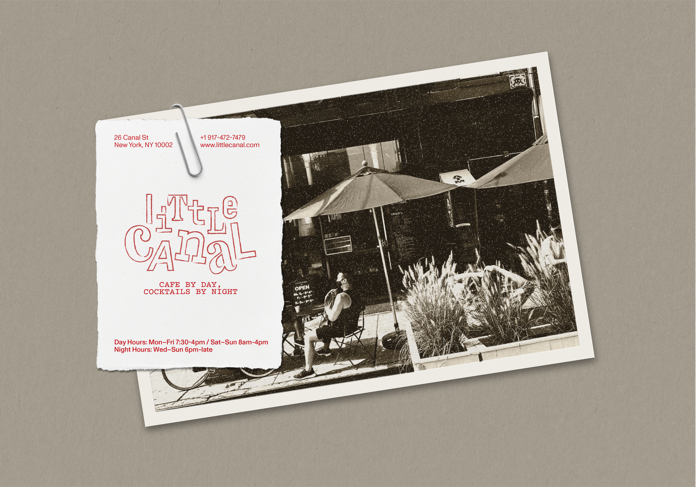

BRANDING & IDENTITY
PUBLICATION
KEY ARTWORK
PACKAGING / PRINT
DIGITAL
TYPEFACE DESIGN
(2025)
Luck for Sale: The Economy of Belief (Parsons CD Senior Thesis)
PUBLICATION DESIGN / BRANDING & IDENTITY / GRAPHIC DESIGN
Project Type: University Coursework
Software(s): Adobe Illustrator, InDesign
As convenience and efficiency have become the main factors driving modern lifestyles, even deeply personal and spiritual practices have adapted to fit the fast-paced rhythm of urbanized societies. This project explores and provides a critical commentary on the intersection of belief systems, material culture, and capitalism in contemporary Thailand through a design-driven lens.

(2025)
Dynamic Identities: Suvarnabhumi Airport Rebrand
BRANDING & IDENTITY / GRAPHIC DESIGN / MOTION GRAPHICS
Project Type: University Coursework
Software(s): Adobe Illustrator, After Effects
Hypothetical rebranding project of Bangkok Suvarnabhumi Airport (BKK). This project involved creating a versatile and dynamic branding system that draws from the airport’s infrastructure and embodies the essence of Thailand's cultural identity. The system is designed to adapt to various touchpoints, including signage, digital interfaces, and marketing materials, providing a cohesive yet flexible visual language.

(2025)
Yantra Reverie (KKP New Year 2026)
GRAPHIC DESIGN / ILLUSTRATION
Project Type: Freelance
Software(s): Adobe Illustrator, AfterEffects
For Kiatnakin Phatra Financial Group’s New Year’s gift collection, I designed the key artwork and applied the visual concept across a range of gift items. The design draws inspiration from Yantra, a traditional Thai art form rooted in faith, symbolism, and Buddhist philosophy. Composed of flowing lines and geometric structures, the artwork reinterprets the spiritual language of Yantra into a contemporary visual expression. What may appear as abstract lines at first gradually reveals a sense of rhythm and intention, reflecting themes of guidance, protection, and prosperity.

(2026)
KKP Chinese New Year 2026
GRAPHIC DESIGN / PACKAGING DESIGN
Project Type: Freelance
Software(s): Adobe Illustrator, AfterEffects
A contemporary interpretation of traditional Chinese New Year red packets, designed for Kiatnakin Phatra Bank. The collection explores themes of prosperity, continuity, and good fortune through abstracted auspicious forms, expressed as bold silhouettes and layered details. Created as a seasonal gesture for clients, the packets are intended to convey well wishes, appreciation, and a sense of lasting success.

(2024)
Historic Monuments of Ancient Kyoto: Kyoto, Uji, and Otsu Cities
BRANDING & IDENTITY / GRAPHIC DESIGN / PUBLICATION
Project Type: University Coursework
Software(s): Adobe Illustrator, Indesign, After Effects
Hypothetical Identity and Editorial Design for the UNESCO World Heritage Site: "Historic Monuments of Ancient Kyoto: Kyoto, Uji, and Otsu Cities”. This project explores the creation of a comprehensive visual identity and editorial system for one of Japan’s most culturally significant UNESCO World Heritage sites. The design initiative seeks to balance historical reverence with contemporary design sensibilities, creating a bridge between centuries-old heritage and modern forms of communication.

(2024)
Block Mono
Typeface Design / Graphic Design
Project Type: University Coursework
Software(s): Adobe Illustrator, AfterEffects
Block Mono is a contemporary monospaced sans-serif typeface that draws inspiration from industrial design, architecture, and construction, subtly infused with a touch of calligraphic flair. Designed for versatility, each character is crafted with attention to proportion and form, balancing sharp, geometric precision with softened, rounded corners. This interplay creates a rhythm that feels both structured and approachable.

(2024)
256: Unpacking the Human Experience
PUBLICATION
Project Type: University Coursework
Software(s): Adobe InDesign
A series of 4 short booklets, in total containing 256 images, exploring the dimensions of the human experience that constitutes one's "reality" and their sense of self. Each booklet loosely investigates a different dimension— the physical, the relational, the temporal, and the mental-through the examination and organization of both representational and metaphorical imagery. Within each dimension, images are sorted into smaller, specific sub-categories. Images range from photographs to graphic design, paintings and installations.

(2023)
Little Canal Rebrand
BRANDING & IDENTITY / GRAPHIC DESIGN
Project Type: University Coursework
Software(s): Adobe Illustrator, InDesign
Rebrand of Little Canal, a neighborhood coffee shop and bar in New York City’s Chinatown. The new identity centers on community, celebrating the spirit of the neighborhood and the connections formed within it. Bold visual language and tactile design elements channel the raw, street-level energy of the area, creating a brand presence that feels authentic, welcoming, and distinctly tied to its surroundings.

(2024)
Dreamscapes in Plaster: Shaping Futures
BRANDING & IDENTITY / GRAPHIC DESIGN / PUBLICATION
Project Type: University Coursework
Software(s): Adobe Illustrator, Indesign, AfterEffects
Branding and identity design for the exhibition “Dreamscapes in Plaster: Shaping Futures”. The visual system reflects the exhibition’s exploration of abstract sculpture and the transformative potential of plaster, translating themes of materiality, form, and imagination into a cohesive design language. Through simplicity in typography, color, and graphic composition, the identity allows the artworks to take center stage.

(2025)
SYNC: Group Travel App
DIGITAL / UX/UI
Project Type: University Coursework
Software(s): Figma
A travel app designed to simplify every stage of group trips—from planning to execution. The platform enables users to collaboratively build itineraries, create polls and vote on activities, split expenses with ease, and share real-time locations. By combining organization, communication, and cost management in one place, it ensures a seamless and enjoyable travel experience for groups of any size.